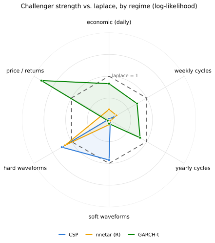

skaters
Home of Laplace, a light, fast, automatic distributional univariate time-series prediction algorithm that also reliably improves the performance of other time-series models (including Prophet). Recommended for non-price economic time-series and available in Python, JavaScript, R, Julia and Rust.
One call, zero dependencies, every prediction a full probability distribution computed online in O(1).
On 894 continuous non-price FRED series, scored one step ahead per series,
laplace has the best held-out log-likelihood in the field, ahead of
AutoARIMA, AutoETS, SARIMAX, conformal methods, the heavy-tail GARCH-t, and four
zero-shot foundation models. It gives up ground only on CRPS, to the CRPS
specialists, and on price and return series, where GARCH-t is the better choice.
The benchmarks →
Each language is an independent, parity-locked port, checked against the reference to 1e-6 (Python also has a Rust backend for speed). A fitted model serialises to JSON, so one fit on a server resumes unchanged in the browser. The languages →
A calibrated surprise signal comes with the state: each point is scored against the
forecast issued for it, so state["z"] is a normalized residual and
state["pit"] its probability integral transform.
See it live →
Turning that signal into streaming anomaly detection with honest false-alarm rates is
its own project, timemachines,
built on skaters.

laplace
sits top-right: fastest, and tied for the best likelihood. The PyMC-laplace
sandwich edges it on accuracy at ~10× the compute; the classical baselines
(AutoARIMA, AutoETS, SARIMAX, GARCH-t) trade accuracy for speed.
The benchmarks →
laplace (log-likelihood, ties split;
laplace is the dashed ring). Outside the ring the challenger wins that regime.
GARCH-t breaks out on price/returns; CSP edges past on the hard, repeating waveforms, where
it is handed the period and laplace is not.
Explore it interactively →
pip install skaters. Every prediction is a Dist — a weighted
Gaussian mixture carrying the mean, the spread, quantiles, and a density at once. You build
models by composition: transforms chain, ensembles nest, and a distributional leaf
sits at the bottom (see the Guide).
Quick start
from skaters import laplace
f = laplace(k=3)
state = None
for y in observations:
dists, state = f(y, state)
dists[0].mean # point forecast
dists[0].std # uncertainty
dists[0].quantile(0.975) # 95th percentile
dists[0].logpdf(y) # log-likelihood
dists[0].cdf(y) # CDF at y
Every skater returns list[Dist] — one weighted mixture per horizon
$h = 1, \ldots, k$. Point forecasts, uncertainty, density evaluation, and quantiles are all
facets of the same object.
One general forecaster

skaters exposes exactly one forecaster, laplace.
At multi-step horizons (k>1) it is multi-scale by default,
mixing instances on decimated clocks by likelihood (opt out with scales=[1]).
Everything else is a building block you can compose. ("skater" is the concept — any
(y, state) → ([Dist], state) function — not a function name.)
from skaters import laplace
f = laplace(k=1)
A likelihood-weighted ensemble over the full candidate pool — model first, conform
last, with the lattice projection on by default, and an Ornstein–Uhlenbeck mean-reversion
group in the multi-step (k>1) pool. Specialist behaviour (mean reversion,
GARCH-style volatility) is reachable by composition (ou_transform,
garch_leaf) when you have a strong prior.
Guide →
The Dist object, transforms, conjugation, and ensembles — how it all composes.
Tiki-taka →
The same algorithm as a football move: switch the ball out to an easier problem and work it back to the original space to score — in your language and team.
Papers & benchmarks →
The paper, and the studies vs ARIMA/ETS/GARCH/conformal and the foundation models.
The sandwich →
Run any forecaster or detector in laplace's coordinates, map back
exactly, and it improves — no retraining.
Languages →
Python, JavaScript, R and Julia over a portable Rust core, every implementation verified identical to 1e-6.
Live demos →
Watch a policy forecast live, with its uncertainty band, on data you choose.
Robustness explorer →
Slice the non-price benchmark any way you like — random, by category, keyword,
seasonality, tails — and watch laplace's win-rate hold, live.
A bijection, not just a forecaster
laplace's calibration state maps each arriving point through its own
predictive cdf, zt = Φ−1(Ft(yt))
— a causal bijection on paths (Rosenblatt, 1952) whose image is, under calibration,
iid N(0,1). Run any forecaster in those coordinates and score it back in the
original ones by exact change of variables: on 30 FRED series, ETS, AutoARIMA,
GARCH(1,1) and Prophet each gain ≈+2 nats/point and lose to their
fronted selves on 30/30 series — converging to laplace plus a few
hundredths of a nat. See the diagram computed live,
or the anomaly-detection consequences at
timemachines (DSPOT 5.2×,
RRCF 1.8× in the same coordinates).
Heritage
skaters is a from-scratch rewrite that distils ideas from
timemachines, the
competition-winning forecasting package by Peter Cotton, and builds on years of experience
running live distributional prediction contests at
microprediction — where forecasts are scored,
continuously, as full distributions rather than points. Sibling packages: precise (online covariance) and
humpday (global optimizers).
Get the source
github.com/microprediction/skaters
·
pip install skaters
·
Examples